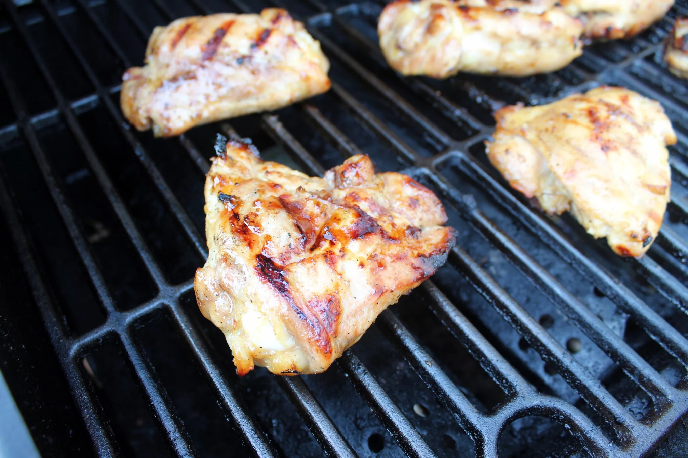

Sweet and sour Grilled Chicken

Ingredients
- ½ cup packed brown sugar
- ¼ cup olive oil
- ¼ cup apple cider vinegar
- 3 tablespoons mustard
- 1 tablespoon lime juice
- 1 tablespoon lemon juice
- 1 clove garlic, minced
- 1 teaspoon seasoned salt
- 1 teaspoon ground black pepper
- 6 (5 ounce) bone-in chicken thighs
Steps
- Combine brown sugar, oil, vinegar, mustard, lime juice, lemon juice, garlic, seasoned salt, and pepper in a medium bowl and mix well.
- Place chicken in a glass or ceramic bowl and cover with sauce. Cover the bowl with plastic wrap and marinate in the refrigerator, 8 hours or overnight.
- Preheat an outdoor grill for medium heat and lightly oil the grate.
- Remove chicken from the marinade and shake off excess. Discard the remaining marinade.
- Cook chicken on the preheated grill until chicken is no longer pink in the center and the juices run clear, 8 to 10 minutes per side. An instant-read thermometer inserted into the center should read at least 165 degrees F (74 degrees C).